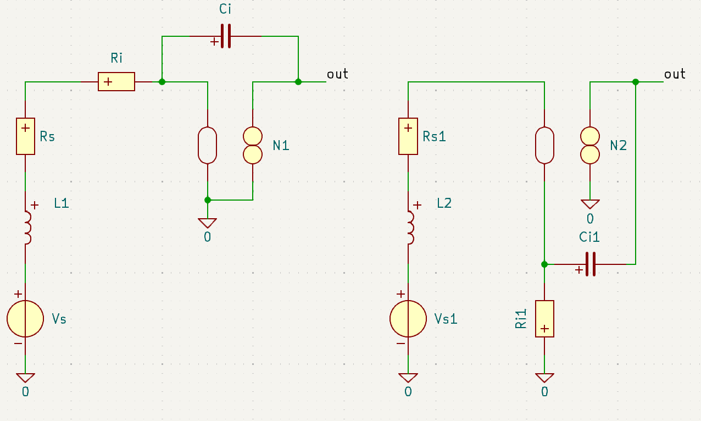

The receive coil converts the induced magnetic field into a voltage. The output of A1 must be matched to the microphone voltage, so the output of A1 must be voltage as well
Type: voltage to voltage
Grounded input, grounded output
$Z_{in} = \infty$ (Ideally)
$Z_{out} = 0$ (Ideally)
$V_{out,pp} = 636$ mV
The amplifier must have an integrating transfer since the induced voltage of the coil is proportional with the rate of change of the magnetic flux. Together with the specs of the microphone, the required transfer can be calculated:
$\frac{V_{out}}{V_{in}} = \frac{62.4\cdot 10^3}{s}$
Options:

Option 1 allows for a design with 1 stage since it is a three-port, which can potentially perform better than a four-port in terms of noise, current and area. Furthermore, the terminiation resistance is maybe not needed since $R_i$ can be designed such that it acts like the terminiation resistance
Other option: active feedback
type: Voltage to voltage
$V_{in,pp} = 636$ mV
$V_{out,pp} = 900$ mV
Amplifier A2 is required to amplify the output of the previous stage to the maximum input of the ADC to maximize the resolution. However, the gain is only 1.41, so if the microphone is able to drive the ADC input, then the amplifier can be omitted at the cost of less dynamic range
The output impedance of the microphone is 5.5$k\Omega$ and forms a low-pass filter together with the input capacitance of 10pF of the ADC. However, the cut off frequency is 2.9MHz, so the drive capibility of the microphone is considered large enough in the required frequency range
Voltage to voltage
Single ended to differential
DAC output impedance is 10k $\Omega$. Input impedance of A3 must be significantly higher
Common mode output voltage around 0V
$V_{in,pp} = 900$ mV
The output peak-to-peak voltage can be calculated. When driven with an RMS voltage of 0.18V, the loudspeaker generates maximally 109dBSPL (the provided answer uses 106dBSPL which is a typical value. For safety reasons we choose the maximum value). From this, the loudspeaker voltage, $V_{LSP}$ can be calculated
$V_{LSP} = 10^{\frac{110-109}{20}}0.18=0.202$ V
When accounting for the crest factor, the loudspeaker peak to peak voltage becomes: $V_{LSP,pp} = 1.21 V$
Which is less than the value provided in the answers, and is less than the power supply.
Option 1: higher input impedance, but requires rail to rail controller
Option 2: High input impedance must be selected. Controller does not have to be rail to rail
Go to index
SLiCAP: Symbolic Linear Circuit Analysis Program, Version 4.0.10 © 2009-2025 SLiCAP development team
For documentation, examples, support, updates and courses please visit: analog-electronics.tudelft.nl
Last project update: 2026-02-23 04:52:44